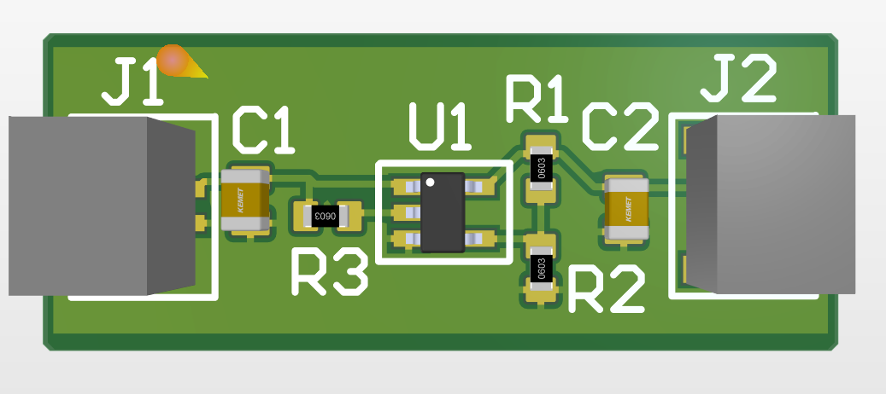

Firmware – Waterloo Aerial Robotics Group
Member of the WARG design team on the electrical subteam. Responsible for designing, assembling, and testing PCBs. = Past projects include designing a PCB in Altium to regulate battery voltage to an accelerometer using an LDO. Check out a finished PCB in the image below:
